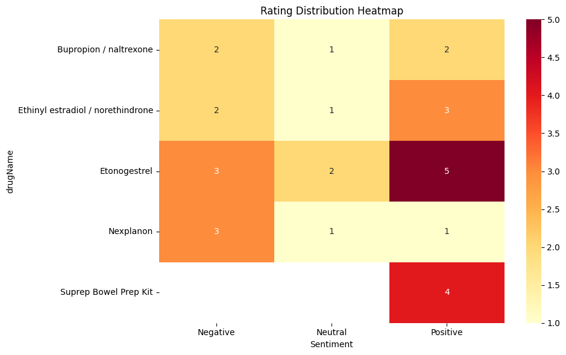

Drug Review Sentiment Analysis
Dataset from Canvas: drug_review.csv
These visualizations created with help from Anthropic's Claude 3.5 LLM.
Sentiment Distribution Heatmap for the Top 5 Drugs
This heatmap visualizes the sentiment distribution across five different medications. The color intensity represents the strength of sentiment, with darker red indicating more positive sentiment and lighter colors showing neutral or negative sentiment. Etonogestrel shows strong positive sentiment (5 in positive column), while Nexplanon displays more negative responses.
Comparing Ratings & Reviews: Individual Drug Sentiment Analysis for the Top 5 Drugs
Looking at ratings versus sentiment scores shows some interesting mismatches. For instance, Suprep Bowel Prep Kit gets high ratings (9.0/10) but mostly neutral sentiment in reviews. It is possible that medical terms often get flagged as neutral even when the review is positive, and also that the word list is not capturing as many sentiment words as would be possible with a more comprehensive list.
Comparative Rating Distribution for the Top 5 Drugs

The stacked bar chart provides a clear comparison of rating distribution across all drugs. This visualization highlights how medications like Etonogestrel have a more balanced distribution of ratings, while others like the Suprep Bowel Prep Kit show concentrated neutral responses. The varying heights of the bars also indicate different sample sizes for each medication, which should be considered when interpreting the results.